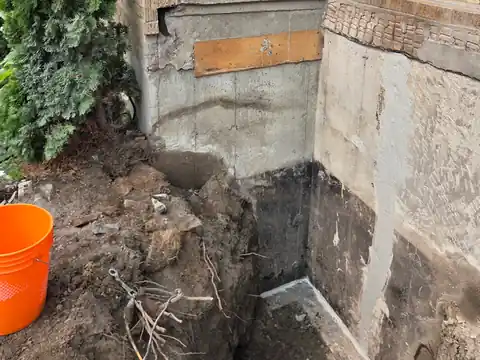

De l'eau qui entre par une fissure dans votre sous-sol à Terrebonne? Nous réparons les fissures de fondation par injection, de l'intérieur, sans excavation et en toute saison, du Vieux-Terrebonne à Lachenaie et La Plaine. Entrepreneur licencié RBQ, soumission gratuite.

Terrebonne a beaucoup grandi depuis les années 1990. À Lachenaie, à La Plaine ou dans les nouveaux quartiers comme Urbanova, une grande partie des maisons a moins de 30 ans. Dans une fondation récente, il est normal de voir apparaître de fines fissures de retrait pendant que le béton sèche. Le problème commence quand l'une d'elles laisse entrer l'eau.
Dans le Vieux-Terrebonne et les secteurs plus anciens, les fondations ont souvent plusieurs décennies et ont subi des années de gel et de dégel. Une grande partie du territoire repose sur un sol argileux, qui gonfle quand il est mouillé et se contracte quand il sèche : ces mouvements travaillent le béton.
Dans les deux cas, une fissure de fondation qui coule se répare de l'intérieur par injection, sans excavation, en une seule visite la plupart du temps.
Vous n'êtes pas sûr que votre fissure soit grave? Lisez notre guide : fissure de fondation, normale ou grave?
Une fissure dans une maison de moins de cinq ans? Vérifiez d'abord votre garantie de construction (GCR) : la réparation pourrait être couverte par le constructeur.
Des fondations plus anciennes, parfois réparées plusieurs fois, où l'eau finit par trouver un passage au fil des saisons.
L'argile gonfle et se rétracte avec les saisons et pousse sur les murs. Une fissure qui s'élargit ou devient horizontale doit être évaluée rapidement.
On examine la fissure, l'endroit où l'eau entre et l'état du mur. Si l'injection n'est pas la bonne solution, on vous le dit.
On nettoie la fissure, on pose des ports d'injection sur sa longueur et on scelle la surface du béton.
On injecte la résine sous pression, du bas vers le haut, jusqu'à remplir la fissure sur toute l'épaisseur du mur.
On retire les ports, on nettoie et on vous explique quoi surveiller lors des prochaines pluies.
Pour une fissure précise qui laisse entrer de l'eau. Pas d'excavation, pas de terrain abîmé, réalisable toute l'année. On utilise une résine de polyuréthane qui reste souple et suit les petits mouvements du béton, ou une résine époxy quand il faut redonner de la solidité au mur.
Quand l'eau entre par plusieurs endroits, au bas des murs ou que le drain français ne fait plus son travail. On excave, on répare la fissure, on pose une membrane d'imperméabilisation et, au besoin, on remplace le drain dans la même opération.
Notre approche : trouver la vraie source de l'eau avant de proposer des travaux. Une injection ne règle pas un drain bouché, et une excavation n'est pas nécessaire pour une seule fissure.
Eau au sous-sol à Terrebonne? Parlons-en aujourd'hui.
Nous réparons les fissures de fondation dans tous les secteurs : Vieux-Terrebonne, Terrebonne-Ouest, Lachenaie, La Plaine, Urbanova, ainsi qu'à Mascouche.
Oui. Nous couvrons tous les secteurs de Terrebonne (Vieux-Terrebonne, Terrebonne-Ouest, Lachenaie, La Plaine, Urbanova) ainsi que Mascouche. La soumission à domicile est gratuite.
Peut-être. Les maisons neuves sont souvent protégées par la garantie de construction résidentielle (GCR), qui peut couvrir certaines infiltrations pendant les premières années. Vérifiez votre contrat avant les travaux. Si la garantie ne s'applique pas, nous pouvons faire la réparation.
Le prix dépend surtout de la longueur de la fissure, de son épaisseur, de son emplacement et de l'accès au mur par l'intérieur. Nous évaluons la fissure sur place et vous remettons une soumission gratuite, détaillée et sans engagement.
Une fine fissure verticale est fréquente dans le béton coulé et n'est pas forcément structurale. En revanche, une fissure qui laisse entrer de l'eau, qui s'élargit, qui est horizontale ou en escalier, ou dont les deux côtés ne sont plus alignés doit être évaluée rapidement. Si nous soupçonnons un problème de structure, nous vous recommandons l'avis d'un ingénieur avant les travaux.
Pour une fissure typique, l'injection se fait en quelques heures, généralement en une seule visite. Il faut seulement dégager l'accès au mur à l'intérieur.
Oui. La soumission est gratuite et sans engagement, et chaque demande reçoit une réponse le jour même, au plus tard dans les 24 heures.
Voir aussi : réparation de fissures de fondation · drain français · imperméabilisation
Soumission gratuite, sans engagement. On prend le temps de bien comprendre votre projet avant de vous proposer quoi que ce soit.